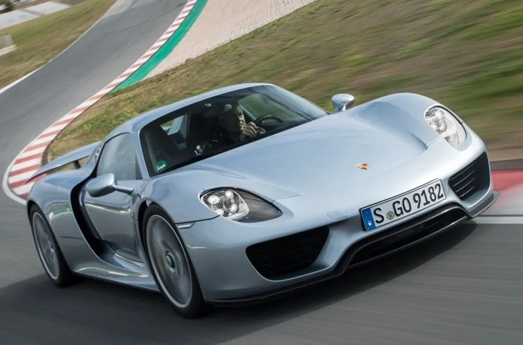
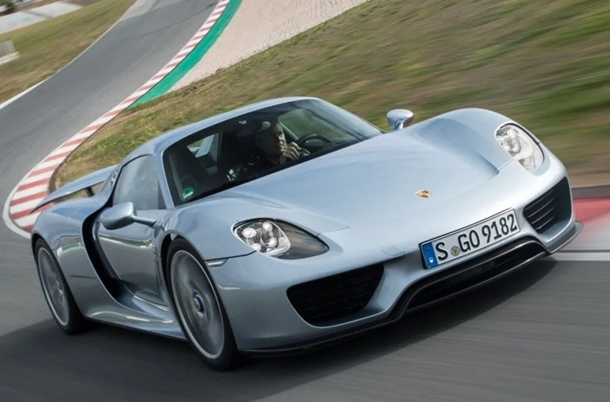
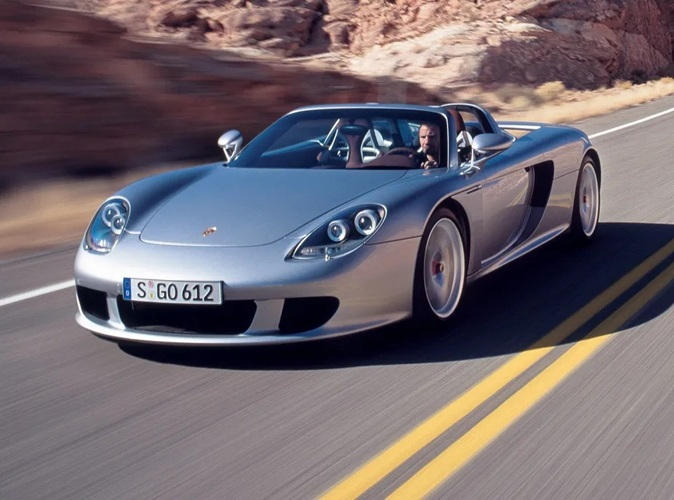
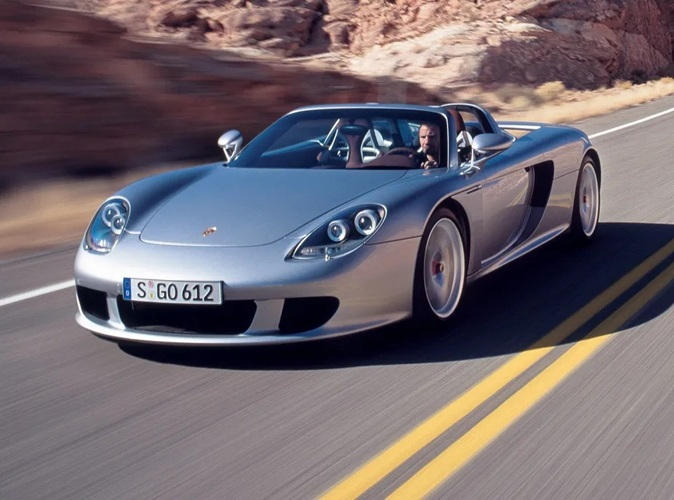

O Que é a Porsche
A Porsche é uma fabricante alemã de automóveis de luxo e esportivos de alto desempenho, fundada em 1931 por Ferdinand Porsche. Com sede em Stuttgart, a marca é conhecida mundialmente por seu design icônico e engenharia de precisão, sendo uma das mais respeitadas no universo automobilístico. A empresa inicialmente prestava consultoria para outras montadoras, mas logo passou a fabricar seus próprios veículos.
Um dos modelos mais emblemáticos da Porsche é o 911, lançado em 1964. Esse carro se tornou um símbolo da marca e permanece em produção até hoje, com diversas atualizações tecnológicas e estéticas ao longo dos anos. A combinação de performance, estilo e tradição tornou o 911 uma referência no segmento de carros esportivos.
Além dos esportivos, a Porsche expandiu seu portfólio nos últimos anos com a introdução de SUVs como o Cayenne e o Macan, além do sedã esportivo Panamera. Mais recentemente, a marca também entrou no mercado de carros elétricos com o lançamento do Taycan, um modelo 100% elétrico que reforça o compromisso da empresa com inovação e sustentabilidade.
A Porsche continua a ser um símbolo de status e performance, atraindo entusiastas e colecionadores ao redor do mundo. Sua combinação de tradição, inovação e excelência em engenharia faz da marca uma das mais desejadas do setor automotivo. A cada novo modelo, a empresa mantém viva a paixão por dirigir com emoção e precisão.
Os Modelos Mais Famosos da Porsche
Ao longo de sua história, a Porsche lançou diversos modelos que se tornaram ícones da indústria automobilística, combinando design marcante, desempenho excepcional e tecnologia de ponta. Entre os mais famosos está o Porsche 911, talvez o carro mais emblemático da marca. Lançado em 1964, o 911 é conhecido por seu design atemporal, motor traseiro e dirigibilidade esportiva. Ao longo das décadas, o modelo passou por diversas gerações, sempre mantendo sua essência e conquistando admiradores em todo o mundo.
Outro modelo de destaque é o Porsche Boxster, um roadster esportivo de dois lugares lançado em 1996, que ficou famoso por oferecer uma experiência de condução dinâmica com um preço mais acessível em comparação ao 911. Seu "irmão coupé", o Porsche Cayman, traz uma proposta semelhante, mas com maior rigidez estrutural, o que o torna ainda mais preciso nas pistas.
O Porsche Panamera, por sua vez, representa a entrada da marca no segmento dos sedãs de luxo. Com quatro portas e espaço interno generoso, ele alia conforto, tecnologia e o desempenho característico da Porsche, conquistando um público que busca esportividade sem abrir mão da sofisticação.
Além disso, a Porsche também se destacou no mercado de SUVs de alto desempenho com o lançamento do Porsche Cayenne em 2002 e, posteriormente, do Porsche Macan. Ambos os modelos trouxeram a esportividade da marca para um novo público, que buscava versatilidade e conforto, sem perder a emoção ao dirigir.


 

 


Mais recentemente, a Porsche entrou no mundo dos carros elétricos com o Porsche Taycan, um sedã esportivo totalmente elétrico que mantém o espírito da marca, com aceleração impressionante, tecnologia de ponta e um design futurista.
Esses modelos mostram como a Porsche conseguiu se reinventar ao longo dos anos, mantendo sua identidade esportiva e conquistando diferentes gerações de apaixonados por carros.
Ferdinand Porsche: O Visionário por Trás de uma Lenda Automotiva
O fundador da Porsche foi Ferdinand Porsche, um engenheiro visionário nascido em 3 de setembro de 1875, na atual República Tcheca, que na época fazia parte do Império Austro-Húngaro. Desde jovem, Ferdinand demonstrou grande talento para a mecânica e a eletricidade, o que o levou a trabalhar em empresas importantes do setor automotivo ainda no final do século XIX.

Antes de criar sua própria empresa, ele já havia participado de projetos marcantes, como o desenvolvimento de um dos primeiros carros elétricos e o trabalho na Daimler-Benz. Em 1931, fundou a "Dr. Ing. h.c. F. Porsche GmbH", inicialmente como uma empresa de consultoria em engenharia automotiva. Um de seus projetos mais famosos, antes mesmo da criação dos carros esportivos da marca Porsche, foi o desenvolvimento do Volkswagen Fusca, a pedido do governo alemão. Seu talento para unir inovação e funcionalidade foi fundamental para o sucesso da Porsche como fabricante de automóveis esportivos.
Embora tenha enfrentado críticas e controvérsias por sua colaboração com o regime nazista durante a Segunda Guerra Mundial, Ferdinand é lembrado como um dos engenheiros mais influentes da história da indústria automotiva. Após sua morte em 1951, seu filho, Ferry Porsche, assumiu a liderança da empresa e foi o responsável por lançar o primeiro carro da marca Porsche, o modelo 356, dando início à trajetória de sucesso da empresa no mercado global.